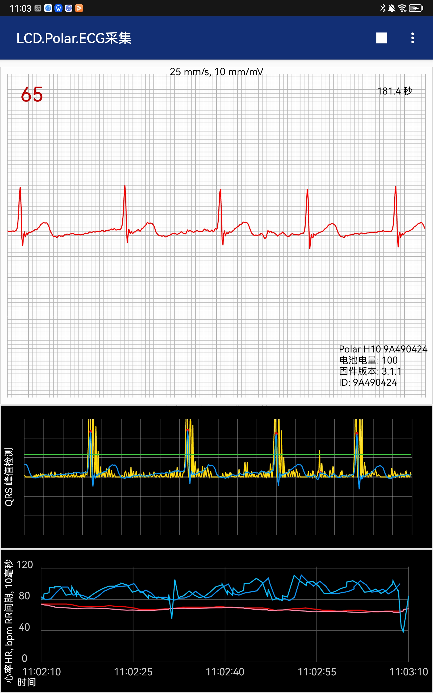

此应用程序显示来自Polar H10传感器的实时ECG数据。目前它只适用于H10，并且H10必须安装3.0.35或更高版本的固件。
该应用程序内置与传感器不同的QRS波检测算法，并对来自传感器的数据和经内部算法计算后的HR和RR值进行同时绘制。开发内部算法是因为在某些情况下H10报告的心率与心电图中的峰值数量不一致。

这是来自传感器和算法的HR和RR的图。心率HR在bpm中，RR间期以0.1毫秒为单位(以保持值与HR值在同一范围内)。浅粉色的值是内部计算。暗红色的值来自传感器。注意，HR是一个计算值，它是在RR间期的平均心率，并不是直接测量的。RR间期是实际测量值。H10使用什么算法并不是公开信息，但内部算法以每分钟60次(以秒为单位的最后25个RR间隔的运行平均值)。
还有一个可选的图的中间步骤在算法。这对于研究算法正在做什么很有用，而不是查看实际的心电图数据。这幅图显示了它检测到的峰值和数字滤波加上其评分算法的最终结果。由于数字滤波器的特性，这些后来被延迟从输入心电信号。这个视图可以在 设置-是否显示QRS图 中关闭。
网格中有大大小小的格子，一个大盒子在水平(时间)轴上是0.2秒（5个大格是1秒），在垂直轴上是0.5 mV（2个大格是1mV）。一个页面横坐标共有20个大格显示4秒的心电数据。
由于Android12权限设置，除了蓝牙权限外需要授权软件“位置信息”权限！同时为了将CSV数据存到本地文件夹下还需要授权文件读写权限！
ECG心电数据
文件以PolarECG-yyyy-MM-dd-HH-mm-ss.csv格式命名。超过30分钟以上的心电数据在确认保存时会出现些许卡顿，无需反复保存等待保存成功的提示弹出后即可。 数据由表头和电压信息组成，内容如下：
| 标签 | 说明 |
|---|---|
| 采集平台 | 采集软件的名称及版本 |
| 停止采集时间 | 停止采集数据的日期/时间 |
| 持续采集时间 | 数据持续采集的时间 |
| 数据长度 | 心电数据的长度 |
| 采样频率 | 一般为默认的130Hz |
| 停止采集时的心率 | 设备停止采集时的心率数据，传感器通过蓝牙传的 |
| 停止记录时的心率 | 记录停止时计算的心率数据，内部算法计算的 |
| 设备名称 | 心率设备的名称 |
| 设备ID | 采集设备的ID |
| 电池电量 | 采集设备的电池电量 |
| 固件版本 | 采集设备的固件版本 |
| 受试者名称及编号 | 受试者的名称及编号，也可以添加备注信息 |
心电图电压以毫伏为单位，数值保留到小数点后3位
原始心率数据
文件以PolarECG-DeviceHR-yyyy-MM-dd-HH-mm-ss.csv格式命名，对应的值为停止时间。这些值是一个时间戳、HR值和一个由空格分隔的RR值列表。RR值为整数，单位为1/1024秒，即设备的原始数据。
计算的心率数据
文件以PolarECG-DeviceHR-yyyy-MM-dd-HH-mm-ss.csv格式命名，对应的值为停止时间。这些值是一个时间戳、HR值和一个由空格分隔的RR值列表。RR值为整数，单位为1/1024秒，即设备的原始数据。
必须在停止采集后才能保存当前数据，下一次采集开始后会释放之前采集的结果。
数据保存
数据保存菜单有多种保存类型，可以按需进行数据存储。
保存所有数据
保存心电数据&心电图
保存30s心电图
保存心电数据
保存原始心率数据
保存计算后的心率数据
设置设备ID
设置您的PolarH10的ID，同时软件也会记录您之前使用过的设备ID
设置存储目录
设置CSV和PNG文件保存的目录，需要选择或新建有读写权限的文件夹。新建的文件夹在软件删除后也会保存。
设备信息
显示传感器的信息和当前状态。
重置绘制接口
画图出现渲染问题或者长时间不绘制则可以尝试使用该功能
重启采集接口
相当于重启程序。
您可以在此设置设备ID、受试者的名称和是否打开QRS峰值检测图。